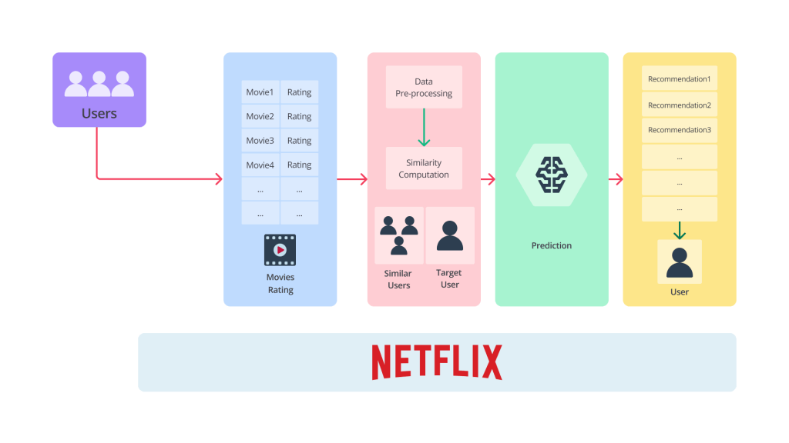
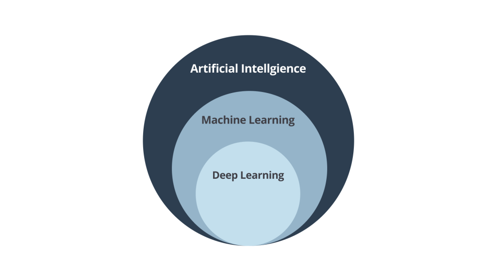

AI adalah Teknologi yang dapat Mempermudah Kehidupan Manusia
Artificial Intelligence (AI) adalah teknologi yang dapat memudahkan kehidupan manusia pada berbagai bidang pada saat ini. Mengapa hal itu bisa terjadi? Ini karena AI memungkinkan komputer untuk belajar dari pengalaman (data), mengidentifikasi pola, membuat keputusan, dan menyelesaikan tugas-tugas kompleks dengan cepat dan efisien.
Tentu kamu sudah pernah melihat atau bahkan menggunakan penerapan dari AI di kehidupan sehari-hari baik secara sadar maupun tidak sadar. Saat ini penerapan AI sudah menyebar ke seluruh bidang industri. Perhatikan gambar berikut!

Seperti yang kamu lihat pada gambar di atas, penerapan AI sudah ada pada berbagai bidang di industri. Salah satu contoh penerapan AI adalah sistem rekomendasi yang dikembangkan oleh Netflix. Netflix adalah layanan streaming berbasis langganan yang memungkinkan pengguna menonton acara TV dan film di perangkat yang terhubung ke Internet.
Netflix menggunakan AI untuk merekomendasikan film kepada pengguna mereka melalui sistem rekomendasi yang mereka bangun. Sistem ini berperan penting dalam meningkatkan pengalaman pengguna dengan menyediakan rekomendasi yang disesuaikan dengan preferensi masing-masing pengguna. Berikut adalah gambaran dari sistem rekomendasi yang dikembangkan Netflix.
Nah, saat ini kamu sudah mengetahui salah satu contoh penerapan AI di industri yang mungkin selama ini sudah pernah kamu gunakan. Contoh penerapan AI tersebut hanya menceritakan garis besar penerapannya. Setelah membaca contoh penerapan tersebut, apakah terbesit di benak kamu sebuah pertanyaan “Apa sih sebenarnya AI itu?” Jika hal tersebut muncul, mari kita bahas AI lebih dalam lagi bersama-sama!
Pengertian AI
Artificial Intelligence (AI) adalah sebuah teknologi yang memberikan kemampuan untuk berpikir dan belajar dengan komputer. Dengan demikian penerapan AI dapat membantu memecahkan masalah dengan cara yang cerdas menggunakan algoritma. Dengan menggunakan cara yang cerdas tersebut kita tidak perlu lagi melakukan hal yang berulang-ulang dan dapat menghindari kesalahan pengguna. Namun, apakah kalian penasaran bagaimana untuk mendefinisikan “cara yang cerdas” dan apa yang dimaksud “cara yang cerdas”? Mungkin banyak dari kalian yang bertanya-tanya terkait kalimat sebelumnya. “Cara yang cerdas” ini dapat didefinisikan dengan melakukan pendekatan komputasi untuk meniru kecerdasan manusia yang dipengaruhi oleh data.
Dengan kata lain, Artificial Intelligence ini merupakan teknologi yang menggunakan komputer untuk menyelesaikan tugas secara otomatis dengan sedikit campur tangan manusia atau bahkan tanpa campur tangan manusia sama sekali. Keren, bukan?
Keuntungan AI
Ada banyak sekali keuntungan ketika kita membuat sebuah sistem berbasis AI. Mari kita bahas satu per satu keuntungan ketika menerapkan AI di kehidupan sehari-hari.
-
Mengurangi human error
Human error memiliki arti kesalahan manusia yang diakibatkan oleh kekeliruan pengguna dari waktu ke waktu. Dengan menerapkan AI akan membuat komputer dapat menentukan keputusan berdasarkan data yang telah dipelajari sebelumnya. Oleh karena itu, kesalahan yang dilakukan oleh manusia baik itu dikarenakan kelalaian atau kelelahan akan berkurang atau bahkan tidak ada sama sekali. -
Dapat bekerja tanpa henti
Seperti yang kita tahu, manusia normal akan bekerja selama 6-12 jam per harinya. Di luar itu, manusia membutuhkan waktu istirahat dan melakukan aktivitas lainnya. Bayangkan, dengan menggunakan AI, kita dapat membuat komputer mengerjakan tugas selama 24 jam tanpa merasa lelah dan bosan. Keren, bukan? -
Meningkatkan produktivitas
Dengan melakukan tugas yang terus menerus, akan berdampak pada peningkatan produktivitas pekerjaan. Penghematan waktu saat bekerja bisa digunakan untuk melakukan pekerjaan yang lainnya. Hasilnya, tugas yang diselesaikan akan lebih banyak dengan bantuan AI daripada hanya dilakukan secara manual oleh manusia.
Sejujurnya, kelebihan penerapan AI masih banyak sekali. Namun, kita tidak akan membahas semuanya sekarang. Karena semakin banyak kelebihan suatu hal, kita akan semakin penasaran apakah hal tersebut memiliki kekurangan juga? Jawabannya adalah ya! AI juga memiliki sebuah kekurangan. Salah satunya, dengan menerapkan AI akan membuat manusia menjadi malas. Manusia akan bergantung kepada AI untuk melakukan tugasnya sehingga dapat menyebabkan kemalasan pada generasi masa depan. Di sinilah keputusan kamu dibutuhkan, apakah kamu ingin menjadi pengembang AI atau malah menjadi korban AI? Putuskan masa depanmu sekarang!
Terminologi AI
Sejujurnya, kelebihan penerapan AI masih banyak sekali. Namun, kita tidak akan membahas semuanya sekarang. Karena semakin banyak kelebihan suatu hal, kita akan semakin penasaran apakah hal tersebut memiliki kekurangan juga? Jawabannya adalah ya! AI juga memiliki sebuah kekurangan. Salah satunya, dengan menerapkan AI akan membuat manusia menjadi malas. Manusia akan bergantung kepada AI untuk melakukan tugasnya sehingga dapat menyebabkan kemalasan pada generasi masa depan. Di sinilah keputusan kamu dibutuhkan, apakah kamu ingin menjadi pengembang AI atau malah menjadi korban AI? Putuskan masa depanmu sekarang!
Perhatikan gambar berikut.
Sebenarnya, AI masih memiliki banyak sekali bidang turunannya. Namun, pada kesempatan ini, kita akan membahas bidang turunan yang paling banyak digunakan saat ini.
Artificial Intelligence (AI)
AI adalah teknologi yang menerapkan peniruan perilaku manusia terhadap komputer untuk memanfaatkan komputer mempelajari dan melakukan tugas tanpa perlu bantuan eksplisit tentang output yang diharapkan. Nah, dengan penjelasan tersebut AI memungkinkan komputer untuk belajar dari pengalaman, mengidentifikasi pola, membuat keputusan, dan menyelesaikan tugas-tugas kompleks dengan cepat dan efisien.
Machine Learning (ML)
Machine learning (ML) merupakan salah satu bagian dari kelompok keilmuan AI yang secara otomatis dapat belajar dan berkembang berdasarkan pengalamannya. Machine learning adalah sebuah teknologi yang menggunakan metode statistika untuk membuat komputer dapat mempelajari pola pada data tanpa perlu diprogram secara eksplisit. ML bergantung pada algoritma yang digunakan untuk menganalisis data dalam jumlah yang besar, belajar dari pengetahuan berdasarkan data, dan memberikan keputusan berdasarkan pengalaman yang dipelajarinya dengan tepat.
Pelatihan model pada machine learning berguna untuk meningkatkan performa dari waktu ke waktu setiap kali pelatihan itu dilakukan. Nah, setelah melewati proses tersebut, kita akan mendapatkan sebuah output dari proses pembelajaran mesin tersebut. Output akhir dari pengembangan Machine Learning ini sendiri merupakan sebuah model yang dapat melakukan tugas berdasarkan data pelatihan yang diberikan. Semakin banyak data yang digunakan, semakin baik pula modelnya. Bagaimana menurut kamu? Apakah saat ini kamu sudah dapat membedakan apa itu Machine Learning dan AI? Jika saat ini kamu dapat membedakan hal tersebut, mari kita bahas satu bidang lagi yang lebih dalam dari AI!
Deep Learning
Setelah kamu mempelajari Machine Learning, mari kita selami lebih dalam bagian dari Artificial Intelligence yang ada pada artikel ini. Kenalkan Deep Learning!
Deep Learning merupakan bagian dari Machine Learning. Namun, perlu kamu ketahui bahwa terdapat perbedaan mendasar antara Machine Learning dengan Deep Learning. Deep Learning merupakan pembelajaran mesin yang didasari oleh saraf tiruan, proses yang lebih kompleks dari pada Machine Learning karena pada tahapan ini proses pembelajarannya terdiri dari beberapa bagian mulai dari input, hidden layer, dan output.